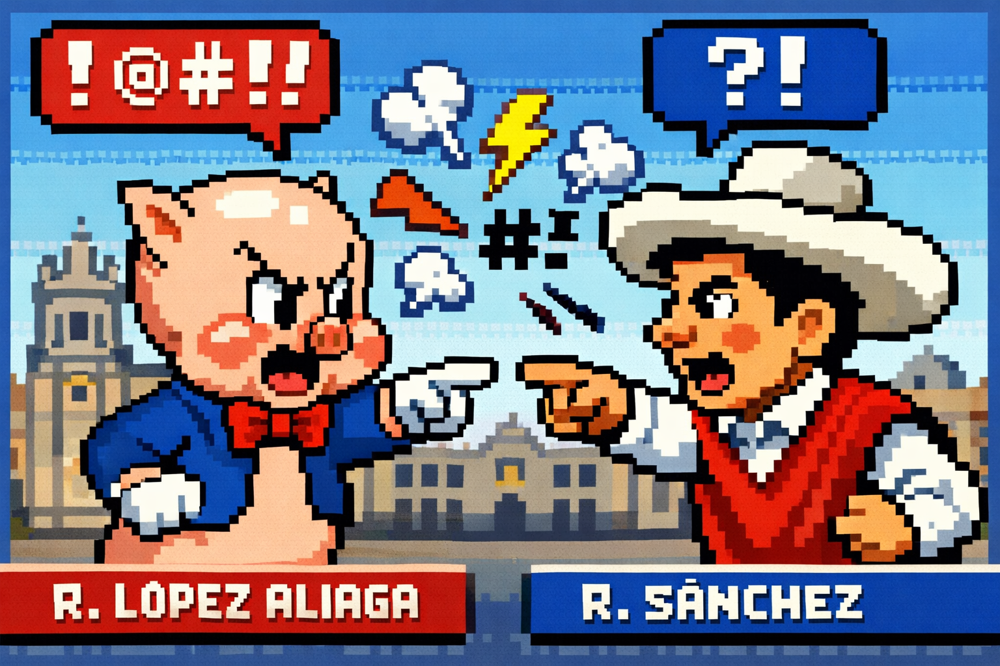

Actas procesadas
—

Conteo electoral Perú 2026 y proyecciones de resultados.
Actas procesadas
—
Data obtenida
—
Porcentaje de votos válidos del total (Top 6)
Votos contabilizados por snapshot con cortes cada 30 minutos (Top 5)
| REGIÓN | VOTOS DE SÁNCHEZ | PORCENTAJE DE CONTEO | VOTOS INTERPOLADOS |
|---|---|---|---|
| Cargando... | |||
Data del corte: —
Interpolación total de votos Pro-Sánchez en todas las regiones: —
Interpolación total de votos para Rafael López Aliaga (Renovación Popular) en todas las regiones: —